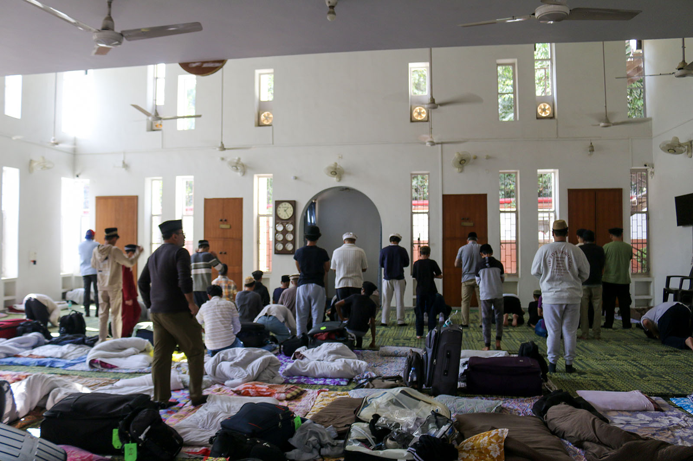

Chapter 4 of 22
Early Arrival in Delhi

We arrived in Delhi at 3 a.m., stepping into the calm stillness of the early morning. The journey had been long, but the excitement of finally being in India—the land so deeply intertwined with the history of our Jamaat—kept us wide awake.
At this quiet hour, the airport felt surreal. As we passed through immigration and customs, we once again witnessed the blessings of Allah. Despite the potential challenges, everything went smoothly. It felt as though every prayer offered by our families, friends, and beloved Huzur (aba) had paved the way for us.
As instructed by the Delhi Jamaat, we exited through Gate 5, where Saeed Sahib and Fateh Sahib were waiting for us with a welcoming sign that read “Waqf-e-Nau.” Seeing them, it felt as if we had come home. This is the beauty of being part of Jamaat Ahmadiyya—no matter where you are in the world, you are never a stranger. We are one family, and in this family, love and hospitality are universal.
After warm introductions and greetings, we set out for Masjid Baitul Hadi. The roads were quiet, and the city’s centuries-old history seemed to echo in the stillness. I couldn’t help but reflect on Delhi’s place in the heritage of Islam and the Jamaat. It was the hometown of Hazrat Amma Jaan (ra), the blessed wife of the Promised Messiah (as). Her brother, Hazrat Mir Muhammad Ismael (ra), also hailed from this historic city. A brilliant Hakeem and poet, he wrote the celebrated naat “Badar Gaah-e-Zeeshan Khairul Anaam.”
Delhi, often referred to as the soul of India, has witnessed the rise and fall of empires. It is the cradle of Urdu, a language that was born in the courts of the Mughals and flourished in the poetry of literary giants like Mirza Ghalib and Mir Taqi Mir. This city is a living museum, where every street and monument tells a story.
By 4 a.m., we reached Masjid Baitul Hadi. The mosque was illuminated in the soft glow of night, exuding a serene beauty. Inside, the spacious men’s prayer hall stood to the left, with a ladies' area in the balcony above. The central section housed the kitchen and offices, and the second floor held the guest house, where Hazrat Mirza Tahir Ahmad (rh) and Hazrat Mirza Masroor Ahmad (aba) had stayed during their visits.
As we stepped inside, we were greeted warmly by Mirza Haris Ahmad Sahib, National Secretary Waqf-e-Nau, and his brother Mirza Nabeel Sahib, the trip coordinator. For some of us, it was the first time meeting them in person, but after months of Zoom meetings, phone calls, text messages, and emails, it felt as though we already knew them well. They greeted everyone by name, a simple gesture that reflected the care and dedication they had put into this journey.
In that moment, we felt truly connected—not just as travelers on this trip but as part of a greater bond tied to Khilafat, service, and faith.